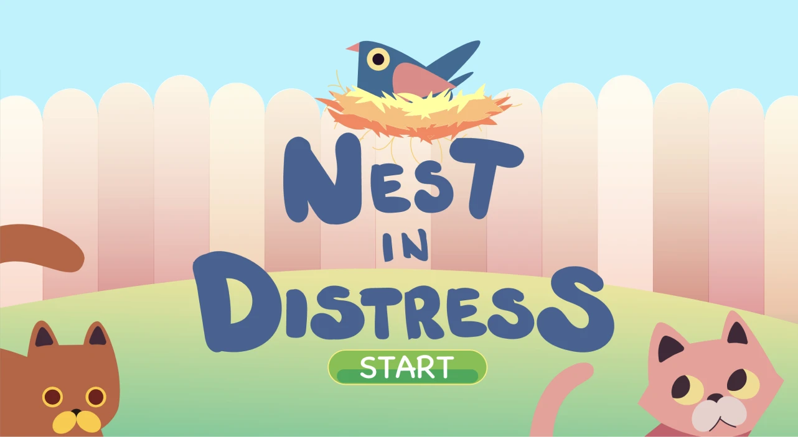
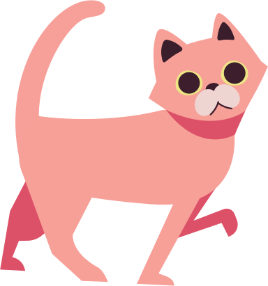
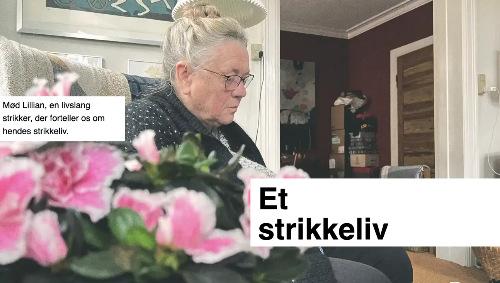
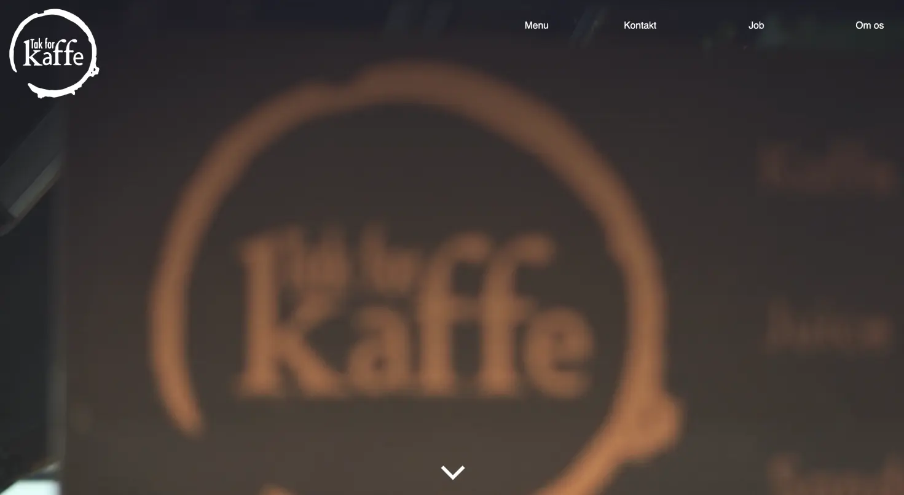

Introduction
During the first semester of Multimedia Design at Copenhagen School
of Design and Technology have I been introduced to the basics behind
front-end development and content creation. The main focus has been
on developing the fundamentals of HTML, CSS and very basic vanilla
JavaScript. Apart from that, have we also been taught various design
conventions and ways to develop your own creations, such as working
with crazy 8's, trunk test and a variety of different design sprint methods.
This website is a part of my final examination in the first semester, but it's also a way to showcase my growth and skill-development throughout these couple of months.
Basic web
During our first module, were we introduced to the absolute basics
of website-development. Most of the text, images and layout-plans were
already handed down to us from our teachers. Our job was to figure
out how to create a functional website, includnig all of the
assigned content, in the way that the layout plan had called for.
The main take-aways from this module:
- Troubleshooting
- Searching for information online
- Embracing problem-solving
Basic animation
By far was this the most challenging module. JavaScript was
introduced to us, and the main project of this module was to develop
a simple game, with the help of writing JavaScript functions. It was
also the most rewarding project in terms of forcing oneself to
develop a much better understanding of CSS and how to communicate
between HTML, CSS and JS.
In doing this project, we had to illustrate assets based on a specific style. I chose to analyse the style used in the game Two dots, illustrated by the British illustrator Owen Davey.


The main take-aways from this module:
- Developing the right way to think when writing JavaScript
- Pushing through what felt like impossible tasks
- Daring to experiment
Basic content
The last module before the exam was divided into two major parts. The first part introduced us to video-recording and editing.


Text om verksamhet och grupparbete
The main take-away from this module is:
- Troubleshooting
- Searching for information online
- Embracing problem-solving